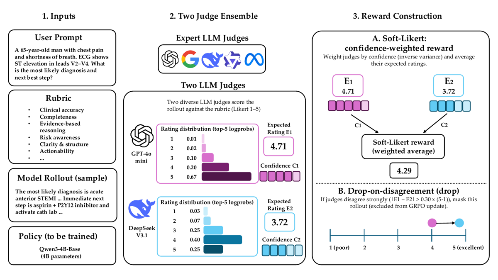
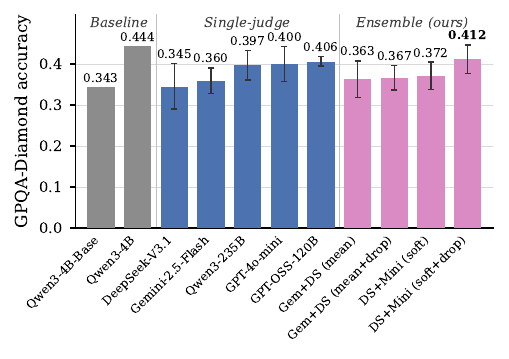
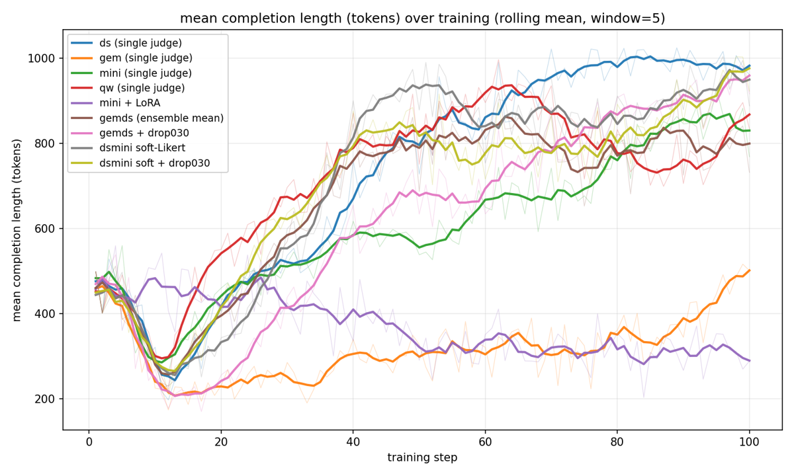

TL;DR — À rubrique fixée, le simple changement d'identité du juge LLM déplace la qualité de la policy autant que le RL lui-même ; les auteurs exploitent ce bruit plutôt que de le subir, via (a) un reward soft-Likert pondéré par la confiance intra-juge lue dans les logprobs et (b) un masque drop-on-disagreement qui annule l'advantage GRPO des rollouts où deux juges divergent.
Claim principal — Sur Qwen3-4B-Base entraîné en GRPO sur RaR-Medicine / RaR-Science (100 steps), le spread inter-juges à rubrique constante est de 0,296–0,339 sur HealthBench English-only (~4,3 pp, comparable au gain RL vs base à 0,257) et 0,345–0,406 sur GPQA Diamond [§4.2, Fig. 2, Fig. 3, App. C]. La composition soft-Likert + drop (paire DeepSeek-V3.1 + GPT-4o-mini, τ=0,30) atteint 0,364 sur HealthBench contre 0,339 pour le meilleur juge unique (+2,5 pp) et 0,412 contre 0,406 sur GPQA (τ=0,40) ; la moyenne naïve des juges, elle, n'améliore rien (0,307, entre ses deux constituants) [§4.3].
⚠️ Le claim est à prendre avec deux réserves structurelles : (i) sur GPQA, toutes les variantes RaR, RaRE comprise (0,412), restent sous la référence Qwen3-4B tunée (0,444) [Fig. 3] et l'écart RaRE vs juge unique n'est pas significatif sur 5 seeds (admis en Limitations) ; (ii) le juge d'éval HealthBench (gpt-4o-mini) est aussi l'un des deux juges d'entraînement de la config gagnante.
<rubrics> est rendu comme une liste à plat de descriptions de critères, « the judge weighs them holistically » [App. J]. L'agrégation pondérée explicite est donc abandonnée au profit d'un jugement implicite.{"rating": <integer 1-5>}, additionalProperties: false, pas de rationale) — c'est ce qui garantit que le digit de rating tient en un seul token, condition nécessaire pour lire les top-logprobs [§3.1.2, App. J]. Fallback hard-Likert si l'endpoint ne renvoie pas de logprobs : on parse l'entier, $\mathrm{Var}_j=0$, $c_j=1$, l'ensemble dégénère en moyenne simple [§3.1.2]. Aucune gestion d'erreur d'API décrite côté policy.gemds en 1–10, dsmini en 1–5) [App. J, App. P].4o-mini_lenpen) mais sa forme fonctionnelle n'est pas précisée [§4.2, Tab. 2].
You are an expert evaluator. Given a user prompt, a generated response, and a list of quality rubrics, rate the overall quality of the response on a scale of 1 to 5 based on how well it satisfies the rubrics, where 1=very poor, 2=poor, 3=neutral, 4=good, 5=excellent. Respond with ONLY a valid JSON object of the form {"rating": <integer 1-5>} and nothing else (no code fences, no rationale, no additional fields).
User template :
Given the following prompt, response, and rubrics, rate the overall quality of the response on a scale of 1 to 5 (1=very poor, 5=excellent). <prompt>{question}</prompt> <response>{response}</response> <rubrics>{rubric_text}</rubrics> Your JSON Evaluation (must be exactly {"rating": <integer 1-5>}):
Schema : {"type":"object","properties":{"rating":{"type":"integer","minimum":1,"maximum":5}},"required":["rating"],"additionalProperties":false}. Ancrages 1–10 pour gemds : « 1–2=very poor, 3–4=poor, 5–6=neutral, 7–8=good, 9–10=excellent ».
Juge pairwise (baseline sans rubrique) : même structure, {"winner":"A"|"B"}, « You MUST pick exactly one, even if both are similar » [App. J, Tab. 14].
- Robustesse / anti-hacking : le vérifieur n'est pas attaqué explicitement. Seul le length hacking est documenté et combattu (§5). Les auteurs reconnaissent en Ethical Considerations que « RaRE reduces idiosyncratic per-judge bias but does not eliminate biases shared across judges » et que le masque « removes precisely those rollouts where judges disagree most, which could exclude cases where a single judge correctly flags a safety-relevant issue that others miss ».
colocate [App. P]. Différence vs standard : la substitution de reward. Pour un groupe $g$, $\bar r_g$ = moyenne des rollouts non masqués, et $r_{\mathrm{drop}}^{(i)} = \bar r_g$ si $d^{(i)}>\tau$, sinon $r^{(i)}$ [Éq. 8–9] ; l'advantage group-normalisé $A^{(i)}=(r_{\mathrm{drop}}^{(i)}-\bar r_g)/\sigma_g$ est donc exactement 0 pour les rollouts masqués → gradient nul.scale_rewards: false. 100 steps, checkpoint tous les 50. Soft-Likert : L=5 (ou 10 en hard), top-logprobs = 5, $c_j=1/(1+\mathrm{Var}_j)$, τ variable. LoRA quand activé : r=32, α=64, attention + MLP.gem et mini+LoRA sont les seules exceptions, plafonnant ~300–500.emergent (n=132, base 0,381) est « the universal pain point: all seven RaR variants worsen relative to the no-RL base » (de −0,011 pour DeepSeek à −0,063 pour Gemini ; RaRE −0,034) [App. A, Fig. per-category]. ⚠️ Pour un domaine à risque, c'est le signal le plus inquiétant du papier : le RL sur rubrique améliore la moyenne en dégradant la sous-population où l'erreur coûte le plus cher — et l'agrégation d'ensemble ne corrige pas ce mode-là.colocate (fraction mémoire GPU 0,12, max model length 2 304), TRL v1.0.0, 8 GPU data-parallel, 64 rollouts/step [App. P].| Chiffre annoncé | Où il est annoncé | Source dans le papier | Verdict |
|---|---|---|---|
| Spread inter-juges 0,296–0,339 (~4,3 pp) sur HealthBench | abstract, §1, §4.2, §5 | Fig. 2 et Tab. 6 [App. C] : gemini 0,296 → gpt-4o-mini 0,339 | confirmé |
| Spread 0,345–0,406 sur GPQA | §4.2 | Fig. 3 : DeepSeek 0,345 → GPT-OSS-120B 0,406 | confirmé |
| « spread comparable to the gap between RL and the untrained base (0,257) » | §1, §4.2 | base 0,257, pire juge 0,296 → écart 3,9 pp vs spread 4,3 pp | confirmé |
| HealthBench : 0,364 (RaRE) vs 0,339 (meilleur juge unique), +2,5 pp | abstract, §1, §4.3 | Tab. 6 [App. C] : 0,364 [0,353–0,374] vs 0,339 [0,329–0,349] ; CI disjoints | confirmé |
| GPQA : 0,412 vs 0,406 | abstract, §1 | Fig. 3 : RaRE 0,412, GPT-OSS-120B 0,406 | confirmé mais sur-généralisé — non significatif sur 5 seeds (admis en Limitations) ; et toutes les variantes RaR restent sous Qwen3-4B tunée (0,444) [Fig. 3], ce que ni l'abstract ni la conclusion ne mentionnent |
| « naive average fails to outperform the best single judge » | abstract, §4.3, §5 | HB : 0,307 vs 0,339 [Tab. 6] ; GPQA : 0,363 vs 0,406 [Fig. 3] | confirmé |
| « winning on all seven themes » | §1, §4.3 | Fig. 4 : dsmini en gras sur les 7 lignes | confirmé — mais sur-généralisé si on descend d'un cran : sur les 17 catégories, dsmini ne gagne que 12/17 [App. A], et perd sur emergent comme tous les autres |
| drop sur la moyenne naïve : +4,0 pp (0,307 → 0,347) | §5 | Tab. 6 [App. C] | confirmé |
| retirer le drop coûte 3,4 pp (0,364 → 0,330) | §5 | Tab. 6 [App. C] | confirmé |
| τ=0,30 : « ~1,6 pp lift over no drop » | §4.4 | Tab. 3 : 0,314 → 0,330 (HB-1k, gemds hard) | confirmé |
| τ=0,30 masque ~5 % / τ=0,15 14 % / τ=0,35 2 % | §4.4 | Tab. 3 | confirmé |
| τ=0,40 sur GPQA filtre ~24 % | §4.4 | Tab. 4 | confirmé |
| « switching from hard-Likert to soft-Likert lifts the score from 0,295 to 0,364 (+6,9 pp) » | §4.4 | introuvable : aucun tableau ne donne dsmini hard-Likert+drop sur HealthBench complète. 0,295 n'apparaît que comme valeurs LoRA sur HB-1k [Tab. 13] et 0,296 comme mini full-FT HB-1k [Tab. 2] | introuvable — et si 0,295 vient bien de HB-1k, le « +6,9 pp » compare deux protocoles d'éval différents (HB-1k cap 1 024 vs HB complète cap 8 192) |
| « mini-LoRA : 0,295 reward, 1 058 mean characters vs full-FT mini : 0,296 reward, 2 930 mean characters » | §4.2 | Tab. 2 : 4o-mini + LoRA = 1 629 chars ; gpt-4o-mini full-FT = 3 869 chars | contredit (scores cohérents, longueurs non : 1 058 vs 1 629 et 2 930 vs 3 869) |
| gemds : 0,330 full-FT vs 0,295 LoRA, « ~3 pp » | §4.2 | Tab. 13 [App. M] : 0,330 vs 0,295 → 3,5 pp | confirmé (arrondi bas) |
| 97 % de gpt-oss au cap vs ~4 % pour le base | §4.2 | Tab. 2 : 97,0 % vs 4,2 % | confirmé |
| « length penalty keeps responses short with no reward loss » | §4.2 | Tab. 2 : 0,314 vs 0,296 | confirmé (gain, pas seulement absence de perte) |
| top-logit −12 pp, winner-takes-all −14 pp, « below the untrained base (0,266) » | §4.4 | Tab. 5 : 0,214 et 0,198 vs 0,336 ; base HB-1k 0,266 [Tab. 2] | confirmé |
| τ=0,30 dsmini : « improves on no filtering by roughly 3,4 points », test split 0,362 « consistent with the headline medicine number » | App. L | Tab. 12 : 0,331 → 0,365 (val) ; test 0,362 vs headline 0,364 | confirmé (écart 0,362/0,364 dû à split 50 % vs HB complète, cohérent) |
| « Relative rankings remain similar » sous le juge GLM-5.3-Flash | Limitations, App. D | Tab. 7 : sous gpt-4o-mini gemds (34,68) > DeepSeek (33,81) ; sous GLM DeepSeek (33,15) > gemds (32,18) | sur-généralisé — RaRE reste bien 1er sous les deux juges, mais les rangs 2 et 3 s'inversent ; « similar » masque un swap |
| 25,35 % masqués, GPT-4o-mini plus haut dans 99,61 % | App. G | interne à App. G (25 600 rollouts, 4 runs) | confirmé (non recoupable ailleurs) |
| RaRE > GPT-4o juge unique « at about one quarter of the API cost » | App. F | Tab. 9 : 4,46 \$ vs 18,42 \$ (24,2 %) ; 36,4 vs 33,5 | confirmé |
| L=5 (0,263) > L=7 (0,254) | App. K | Tab. 11 | confirmé (écart 0,9 pp, aucun CI → non concluant) |
HealthBench English-only (n=3 931), CI bootstrap [App. C, Tab. 6] :
| Config | Score | 95 % CI | Écart vs meilleur juge unique |
|---|---|---|---|
| Qwen3-4B-Base (no RL) | 0,257 | [0,246–0,267] | −8,2 pp |
| Qwen3-4B (tuné, référence) | 0,308 | [0,297–0,318] | −3,1 pp |
| gemini-2.5-flash-lite | 0,296 | [0,286–0,307] | −4,3 pp |
| qwen3-235B-Instruct | 0,309 | [0,299–0,320] | −3,0 pp |
| gpt-oss-120b | 0,322 | [0,312–0,332] | −1,7 pp |
| deepseek-v3.1 | 0,338 | [0,328–0,349] | −0,1 pp |
| gpt-4o-mini | 0,339 | [0,329–0,349] | — |
| gemds (mean) | 0,307 | [0,297–0,317] | −3,2 pp |
| gemds (mean + drop) | 0,347 | [0,337–0,357] | +0,8 pp |
| dsmini (soft-Likert) | 0,330 | [0,320–0,339] | −0,9 pp |
| dsmini (soft + drop) = RaRE | 0,364 | [0,353–0,374] | +2,5 pp |
GPQA Diamond, test split 50 %, moyenne sur 5 seeds [Fig. 3] : base 0,343 · Qwen3-4B tunée 0,444 · DeepSeek 0,345 · Gemini 0,360 · Qwen3-235B 0,397 · GPT-4o-mini 0,400 · GPT-OSS-120B 0,406 · gemds mean 0,363 · gemds mean+drop 0,367 · dsmini soft 0,372 · dsmini soft+drop 0,412. Sous le protocole 10-permutations (198 Q) [App. H, Tab. 10] : RaRE 39,3 % [37,6–41,1] > tous les juges uniques (36,1–38,4 %) mais < Qwen3-4B 39,9 %, et « the differences are not statistically significant ».
| Ingrédient | Isolé par | Effet |
|---|---|---|
| drop-on-disagreement | Tab. 6, Tab. 3, Tab. 4 | le plus gros levier : +4,0 pp sur la moyenne naïve ; −3,4 pp si retiré de RaRE ; +1,6 pp en hard-Likert |
| drop sans reward d'ensemble | App. E, Tab. 8 | gpt-4o-mini seul au reward + 2 juges pour le masque = 34,2 vs 33,9 (juge seul) vs 36,4 (RaRE) → +0,3 pp seulement : le masque ne porte presque rien sans le reward d'ensemble |
| soft-Likert seul | Tab. 6 | négatif : 0,330 < 0,339 meilleur juge unique |
| forme de la confiance | Tab. 5 | inverse-variance 0,336 vs top-logit 0,214 vs WTA 0,198 → critique, les variantes passent sous le base |
| échelle L | Tab. 11 | L=5 (0,263) ≈ L=7 (0,254), non concluant |
| rubrique vs juge | Tab. 14 [App. N] | pairwise sans Likert : mini 0,312, ds 0,306 ≈ leurs homologues hard-Likert ; gem s'effondre (0,172) et remonte à 0,246 sans rubrique → « the rubric absorbs most of the calibration burden » |
| full-FT vs LoRA | Tab. 13 | LoRA écrase les différences de reward (0,295 partout) : à budget d'adaptateur serré, la qualité du reward ne se voit plus |
| recyclage des rollouts droppés | App. O | nul à négatif (retro-GRPO-aux : 0,279–0,286 vs 0,336) |
⚠️ La combinaison Tab. 8 + Tab. 6 est le vrai diagnostic : ni le masque seul (+0,3 pp) ni le soft-Likert seul (−0,9 pp) ne marchent ; seule la composition paie (+2,5 pp). C'est une interaction, ce qui rend le résultat à la fois intéressant et fragile — il repose sur un seul point (une paire de juges, un domaine, une seed sur HealthBench).
Aucun. Une seule policy (Qwen3-4B-Base), une seule taille, K=2 juges (jamais 3+), 100 steps. Les auteurs l'assument en Limitations (« due to limited compute »). ⚠️ La question naturelle — l'ensemble aide-t-il encore quand la policy est forte ou le juge frontier ? — n'est pas abordée ; le point GPQA (toutes les variantes RaR < Qwen3-4B tunée) suggère que non à 4B.
top_logprobs que Gemini n'expose pas [§4.1] → non reproductible en l'état.evidence (3/6)| Case | Vrai ? | Justification en une ligne |
|---|---|---|
baselines |
✅ | Même base model (Qwen3-4B-Base), même compute et même rubrique pour les 5 juges uniques, + référence Qwen3-4B tunée, + moyenne naïve, + baseline pairwise sans rubrique [§4.1, Fig. 2–3, Tab. 14]. |
ablation |
✅ | Le drop est isolé du reward d'ensemble [App. E, Tab. 8], le soft-Likert isolé du drop [Tab. 6], la forme de la confiance ablatée [Tab. 5], τ balayé sur 2 domaines [Tab. 3–4, Tab. 12]. |
variance |
✅ | 5 seeds d'entraînement + CI 95 % sur GPQA [Fig. 3] et CI bootstrap sur HealthBench [App. C] — case cochée à la lettre, mais ⚠️ les headline HealthBench sont mono-seed et le résultat GPQA multi-seed est non significatif. |
coherence |
❌ | Un chiffre introuvable (hard→soft « 0,295 → 0,364 »), deux longueurs contredites (1 058/2 930 en texte vs 1 629/3 869 en Tab. 2), β=0,0 contre l'objectif KL-régularisé affiché Éq. 1, « rankings remain similar » masquant un swap de rangs 2–3 [Tab. 7]. |
eval |
❌ | Le juge d'éval HealthBench (gpt-4o-mini) est l'un des deux juges d'entraînement de la config gagnante ; aucune validation juge↔humain nulle part ; mitigation réelle mais partielle (regrade GLM-5.3-Flash, qui réordonne les rangs 2–3) [App. D]. |
repro |
❌ | Code « released upon publication » [App. S], juges derrière APIs propriétaires, et le mécanisme central dépend d'un top_logprobs que Gemini n'expose pas et que DeepSeek-V3.1 a cessé de renvoyer en cours d'étude [§4.1, App. G]. |
Plausible mais fragile. Le diagnostic — l'identité du juge, à rubrique constante, vaut autant que le RL lui-même, et le désaccord inter-juges est orienté, pas aléatoire — est solide, utile et mesuré proprement (5 juges, CI disjoints, breakdown par catégorie). La méthode RaRE l'est beaucoup moins : le gain repose sur une interaction entre deux mécanismes dont aucun ne marche seul, mesurée sur une paire de juges, un domaine, une seed, à une échelle de 4B/100 steps, avec un seuil τ dont la sensibilité est de 13 pp pour un pas de 0,05. À répliquer avant de s'appuyer sur le mécanisme ; à citer sans réserve pour le diagnostic.

Ce qu'il faut voir : tout le harness tient dans ce schéma. La policy (Qwen3-4B-Base) ne voit que le prompt ; la rubrique ne sert qu'aux juges. Chaque juge émet un digit 1–5 sous JSON strict, dont on lit les top-5 logprobs pour reconstruire une distribution → rating espéré $E_i$ (4,71 vs 3,72 dans l'exemple) et confiance $C_i$ = inverse-variance. (A) le reward est la moyenne pondérée par la confiance (4,29). (B) si $|E_1-E_2| > 0{,}30\times(5-1) = 1{,}2$, le rollout est masqué. Noter que l'exemple illustratif (écart 0,99) serait conservé : le seuil ne coupe que les désaccords francs.
Ce qu'il faut voir : deux lectures opposées. (1) Le claim tient à la lettre : RaRE (0,412) dépasse les 5 juges uniques (0,345–0,406) et les ensembles naïfs. (2) Mais les barres d'erreur (95 % CI sur 5 seeds) se chevauchent largement — les auteurs le reconnaissent en Limitations — et surtout la barre grise Qwen3-4B tunée à 0,444 domine toutes les variantes RaR. Autrement dit, sur la science, 100 steps de RaR sur un base model n'atteignent pas le post-training officiel du même modèle, quel que soit le juge. L'abstract ne le dit pas.
Ce qu'il faut voir : le failure mode principal, en direct. Toutes les configs plongent brièvement (~450 → ~210–300 tokens vers le step 10–13) puis remontent vers 800–1 000 tokens, c'est-à-dire le cap de génération, sans plateau à l'horizon 100 steps : le reward sur rubrique est monotone en longueur. Deux exceptions nettes :gem (seul juge qui ne récompense pas la verbosité, ~300–500) et mini+LoRA (~290, plat), ce qui confirme LoRA comme amortisseur structurel plutôt que comme correctif de reward. ⚠️ Les configs RaRE (dsmini soft+drop, jaune) hackent la longueur autant que les juges uniques : l'ensembling ne corrige pas ce mode.
| Ingrédient | Choix du papier | Équivalent juridique | Transfert | Ce qui manque |
|---|---|---|---|---|
| Source des tâches | RaR-Medicine / RaR-Science repris tels quels, rubriques offline instance-specific [§4.1] | questions LAB / Vals avec rubrique par instance rédigée par juriste (éléments de réponse, sources à citer, juridiction, réserves) | adaptable | le papier n'apporte aucun pipeline de construction de rubrique ; coût expert juridique non adressé (aucun coût humain ici) |
| Vérifieur | LLM-as-a-judge Likert 1–5, JSON strict, rubrique à plat sans poids, agrégation implicite [§3, App. J] | juge LLM sur rubrique juridique, sortie contrainte à un digit | direct (la mécanique) mais ⚠️ l'agrégation implicite jette les poids — en droit, « citation fausse » et « ton inadéquat » ne peuvent pas peser pareil | aucune mesure d'accord juge↔juriste ; pas de vérification de citations ; rubrique à plat incompatible avec des critères bloquants |
| Mesure du bruit du juge | spread 4,3 pp HB / 6,1 pp GPQA à rubrique constante ; $d=(\max-\min)/(L-1)$ ; 25,35 % de rollouts en désaccord fort ; 99,61 % orientés dans le même sens [§4.2, App. G] | budget de bruit irréductible du reward juridique, à mesurer avant tout entraînement | direct — c'est la recette la plus réutilisable du papier | rien ne manque côté méthode ; en droit il faudra l'estimer par juridiction et par type de tâche (rédaction vs recherche vs QA) |
| Harness / outils | single-turn, 1 024 tokens, aucun outil, aucune exécution [App. P] | agent juridique = multi-turn + recherche documentaire + citations vérifiables | non | tout le volet agentique ; le papier ne dit rien d'un harness à outils |
| Algo | GRPO, β=0, G=8, substitution par la moyenne de groupe → $A=0$ [Éq. 8–9, App. P] | identique | direct (3 lignes dans un trainer GRPO) | effet du masque sur $\sigma_g$ non analysé ; cas « groupe entièrement masqué » non traité |
| Curriculum | aucun ; le seul filtrage est en ligne via τ | filtrage en ligne par désaccord entre un juge « strict » et un juge « laxiste » | adaptable | τ est domaine-spécifique (5 % vs 24 % de masquage) → à recalibrer par sous-domaine juridique, coût de sweep non négligeable |
| Anti-hacking | pénalité de longueur (gratuite : 0,314 vs 0,296) + LoRA comme amortisseur [Tab. 2, App. M] | réponses juridiques longues et argumentées → la longueur est en partie légitime, un cap naïf est dangereux | adaptable | le papier ne distingue pas verbosité et complétude ; en droit il faut une pénalité conditionnée à la structure, pas à la longueur brute |
emergent — la catégorie médicale la plus critique — les 7 variantes RaR, RaRE comprise, dégradent par rapport au base model non entraîné.Le protocole de diagnostic, pas la méthode. Concrètement : (1) fixer la rubrique, (2) faire noter le même corpus de rollouts par K juges de familles différentes, (3) reporter trois statistiques — le spread de score final entre policies entraînées par chaque juge, la distribution de $d$, et surtout l'orientation du désaccord (quel juge note plus haut, et dans quelle fraction des cas de désaccord). Le papier montre que la troisième statistique est la plus informative et la moins chère : 99,61 % d'orientation unilatérale transforme « nos juges sont bruités » en « notre juge A est systématiquement laxiste sur les violations explicites de rubrique », qui est un bug corrigeable, pas un bruit à budgéter.
Le second ingrédient, plus opérationnel : le drop-on-disagreement comme substitution par la moyenne de groupe (3 lignes de code dans GRPO, $A=0$ sur les rollouts masqués), qui a l'avantage sur un simple mask de ne pas changer la taille effective du groupe.
Sur un sous-ensemble LAB/Vals avec rubriques existantes, scorer ~5 000 rollouts d'une policy Gemini figée par 3 juges de familles distinctes à rubrique identique (sortie contrainte à un digit, logprobs activés). Zéro entraînement, coût ≈ celui de 3 passes d'inférence (le papier chiffre 4,46 \$ pour 2 juges × 6 400 rollouts). Mesurer : distribution de $d$, matrice d'orientation du désaccord par paire, et accord de chaque juge avec 50 à 100 rollouts annotés par un juriste — la case que le papier ne remplit jamais.
Résultat attendu : (a) un taux de désaccord fort plus proche du cas « science » (20–30 %) que du cas « médecine » (5 %), le droit étant au moins aussi contesté ; (b) une orientation fortement asymétrique révélant un juge laxiste sur les critères bloquants (citations, juridiction) ; (c) une corrélation confiance↔accord-juriste faible, qui invaliderait le soft-Likert tel quel pour le juridique et renverrait vers des critères bloquants explicites plutôt que vers une pondération par logprobs. Si (c) est infirmé — si la confiance prédit vraiment l'accord juriste — alors le soft-Likert devient une recette directement applicable et c'est une bonne nouvelle bien plus forte que le papier.
Deux, liées : (1) avons-nous une mesure du spread inter-juges à rubrique constante sur LAB/Vals, et surtout de son orientation — ou traitons-nous encore le juge comme un détail d'implémentation, comme le reproche ce papier à toute la littérature RaR ? (2) Sur la sous-population à risque (conseil engageant, délais de prescription, citations), notre RL sur rubrique améliore-t-il ou dégrade-t-il par rapport au modèle non entraîné ? Le breakdown par catégorie [App. A] montre que la moyenne peut monter de 10 pp pendant que la catégorie emergent perd 3,4 pp — et que l'ensembling ne corrige pas ce mode. C'est exactement le profil de risque que « Gemini Law » ne peut pas se permettre, et il est invisible sans breakdown par catégorie de risque.
Classé ALGO : le papier ne construit aucun environnement (tâches, rubriques et harness sont repris de RaR), sa contribution est entièrement dans la construction du reward et son interaction avec l'update GRPO. Priorité A malgré une evidence de 3/6, parce que la question qu'il pose — combien de variance d'un reward non-vérifiable vient du juge et non de la rubrique — est précisément le problème central d'un env juridique, et que personne d'autre ne la mesure à rubrique constante. C'est le diagnostic qui est de priorité A ; la méthode RaRE est de priorité B au mieux.